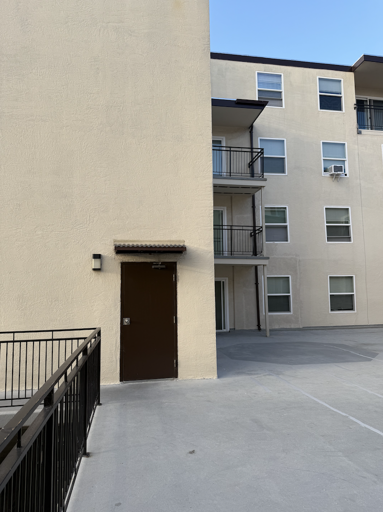
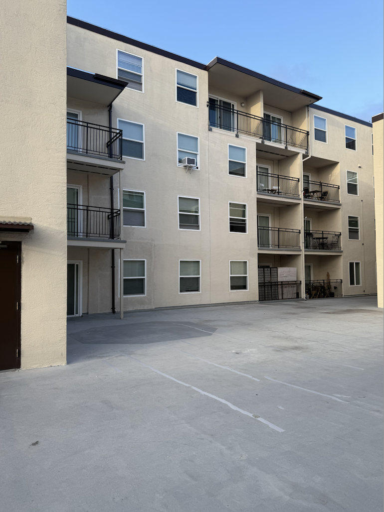
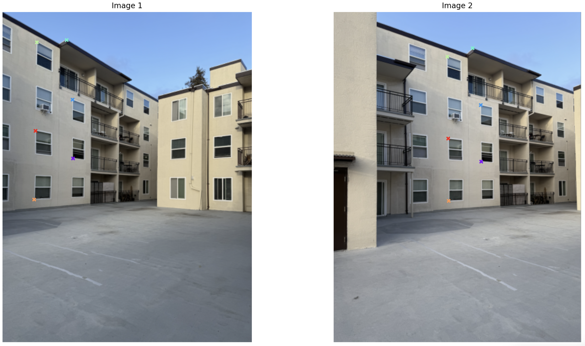
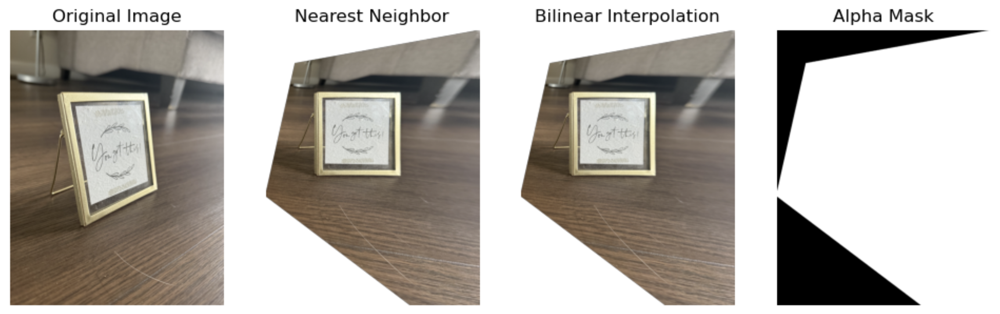
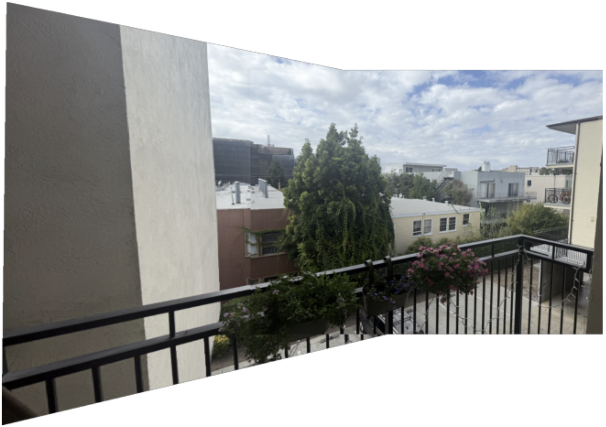
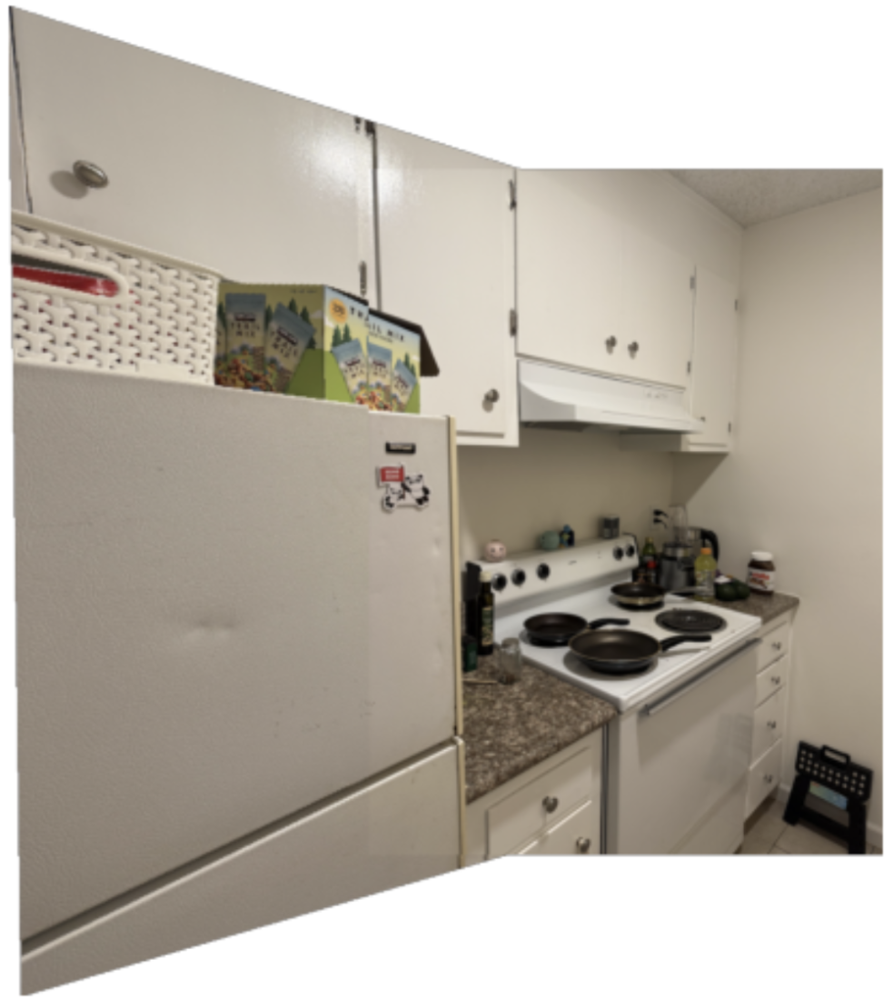
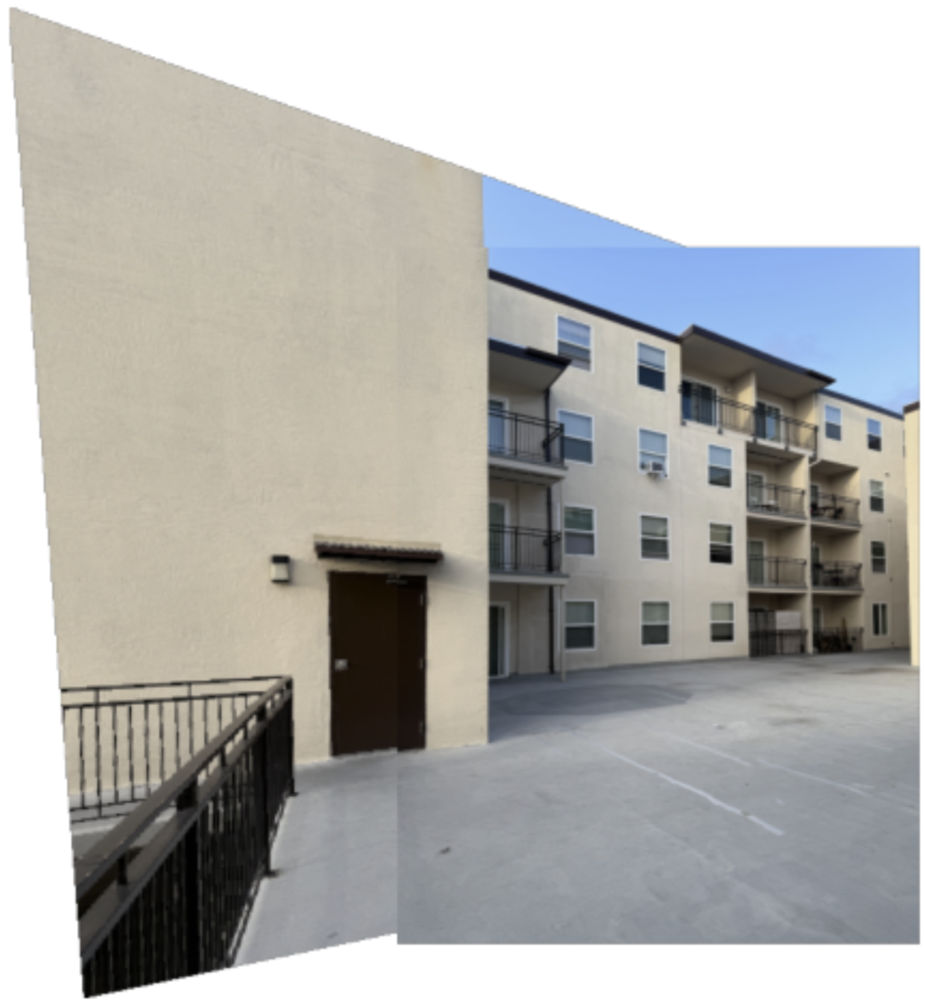

[Auto]Stitching Photo Mosaics
Project 3
The goal of this project is to stitch together many photographs to create larger composite images. The project is divided into two sections.
Part 3A: Image Warping and Mosaicing
This part goes into the cool application of image mosaicing. We'll take two or more photographs and create an image mosaic by registering, projective warping, resampling, and compositing them. Along the way, we'll learn to compute homographies, and to use them to warp images.
Part A.1: Capture and digitize pictures
To find correspondences between images, it is important to ensure that the images are related by a projective/perspective transformation. One common way to achieve this is by fixing the center of projection (COP) and rotating the camera while capturing the photos. This approach ensures that all images contain the same information about the light rays, which is crucial when stitching them together. The diagram below illustrates why keeping the same COP is important for accurate image stitching.
Images WITH the same Center of Projection
PP1 Projection Plane 1 (the image plane)
PP2 Projection Plane 2
We capture the second image (PP2) such that it shares the same COP as the first image (PP1). Notice geometrically that because both images share the same COP, there are light rays that intersect BOTH PP1 and PP2 (denoted by the red dots). The points where the SAME light ray intersects both the images are correspondences. In order words, correspondences are matching points in image planes that come from the same 3D world.

Images WITHOUT the same Center of Projection
PP1 Projection Plane 1
PP2 Projection Plane 2
When two images (PP1 and PP2) are captured from different COPs (eg. by moving the camera between shots) the light rays hitting each image are different. Even though the rays from each image intersect on a synthetic projection plane (the yellow dot), tracing them back shows they correspond to different 3D points in the scene (red dot for PP1, green dot for PP2). Even though the rays intersect, these points are not true correspondences. Note that the surface is non-planar, which affects the rays captured by both images.
Scene 1 - Balcony

Image 1

Image 2
Scene 2 - Kitchen

Image 1

Image 2
Scene 3 - Patio

Image 1

Image 2
Part A.2: Recover Homographies
Before we can warp the images into alignment, we need to recover the parameters of the transformation between each pair. As described below, the transformation is a homography: p'=Hp, where H is a 3x3 matrix with 8 degrees of freedom (the lower right is a scaling factor is is set to 1). \[ H = \begin{bmatrix} a & b & c \\ d & e & f \\ g & h & 1 \end{bmatrix} \] The homography transformation is defined as \[ p' = Hp \] \[ \begin{bmatrix} p_x' \\ p_y' \\ w' \end{bmatrix} = \begin{bmatrix} a & b & c \\ d & e & f \\ g & h & 1 \end{bmatrix} \begin{bmatrix} p_x \\ p_y \\ w \end{bmatrix} \] In order to find the parameters of homography matrix H, we need to- Find corresponding points between two images
- Since this is a homography matrix and we have 8 unknowns, we need at least 4 corresponding points (each point gives two equations for the x and y). However, to make our solution more robust to noise, we will use more than 4 points and build a overconstrained system
- In this section, we are MANUALLY establishing the point correspondences using a mouse-clicking interface
-
Set up a linear system of n equations
- We can solve the overdetermined system using least squares
-
Solve the linear system of equations and compute H = computeH(im1_pts, im2_pts)
- im1_pts and im2_pts are nx2 matrices of the corresponding points

Correspondances Visualized
Part A.3: Warp the Images
Photo Frame Rectification
I took a picture of a photo frame from an angle, which makes it appear as a trapezoid instead of a square. This happens because of perspective projection: objects farther from the center of projection appear smaller, and as a result, parallel lines in the real world no longer appear parallel in the image. Now let's rectify/"unwrap" this image to get a front facing photo frame that looks square.
Kitchen Cabinets Rectification
Here's a rectification using the kichen cabinets. The alpa mask shows the opacity of the pixels and explicitly shows which pixels are part of an image, and the pixels that are undefined/part of the background.
Comparison: Nearest Neighbor vs. Bilinear Interpolation
- Nearest Neighbor interpolation is computationally simpler and faster, but it often produces visible artifacts such as blocky textures and jagged edges, especially along diagonals or when the image is scaled significantly.
- Bilinear interpolation is slightly slower since it averages values from four neighbors, but it produces smoother transitions and more visually natural results, making it better suited for image warping and stitching tasks.
-
When we warp with a homography, the output image may not have the same size as the input.
If we just assume that the rectified image has the same shape as the original image,
parts of the warped image will get cut out. Instead, we can predict the output size to avoid cropping:
- Take the corners of the input image.
- Apply the homography to these corners to get their coordinates in the warped space.
- Find the bounding box that covers the transformed corners.
- We can apply an alpha channel to handle undefined pixels. If we only have the RGB channels, undefined pixels are filled with black by default, which is misleading because we cannot tell whether black pixels are real content or empty background. By adding an alpha channel, we explicitly store opacity and clearly separate content from background.
A.4: Blend the Images into a Mosaic
To stitch the images, I first computed correspondences and used them to estimate a homography transformation (H matrix). Since warping with a homography changes the geometry, the warped image may extend beyond the original size and even into negative coordinates. To handle this, I transformed the input image's corners with H, found the bounding box of those transformed corners, and used it to predict the correct output size. Finally, I applied an offset based on the bounding box minimums to shift everything into non-negative coordinates, ensuring that both the warped image and the reference image could be aligned and placed properly on the same canvas without cropping.Balcony Image Mosaic

Kitchen Image Mosaic

Patio Image Mosaic

Part 3B: Feature Matching for Autostitching
Placemenholder
This section explores ...- item1
- item2
- ...
Temporary Placeholder